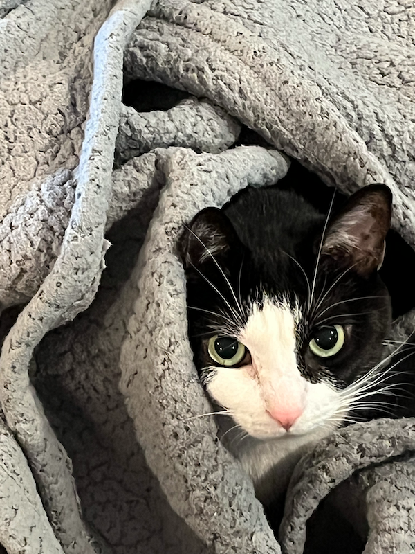

My name is Nicole Mech. I'm currently in my 5th year in Communication Design at UC DAAP. I've always loved to draw and loved the arts and I love Communication Design because I feel like I can combine the creative part of my brain with learning how to solve problems logically.
I have done 3 co-op semesters during my time at DAAP. My first 2 were at Cincinnati Incorporated and I completed one at Eluvio during the spring! I'll be returning there in the fall. I really like to do motion design and animation work, and I hope I can do something like that after I graduate!
I have 3 cats: Bella, Teddy, and Tiana (whose picture is above). Bella and Teddy are 13 and Tiana is 9. I love cats and I enjoy telling people about my cats and the shenanigans they get into!
I also like to play video games in my free time! I grew up playing a lot of Pokemon and Kirby games, and now I'm always looking for new games to try. Some of my favorite games are: